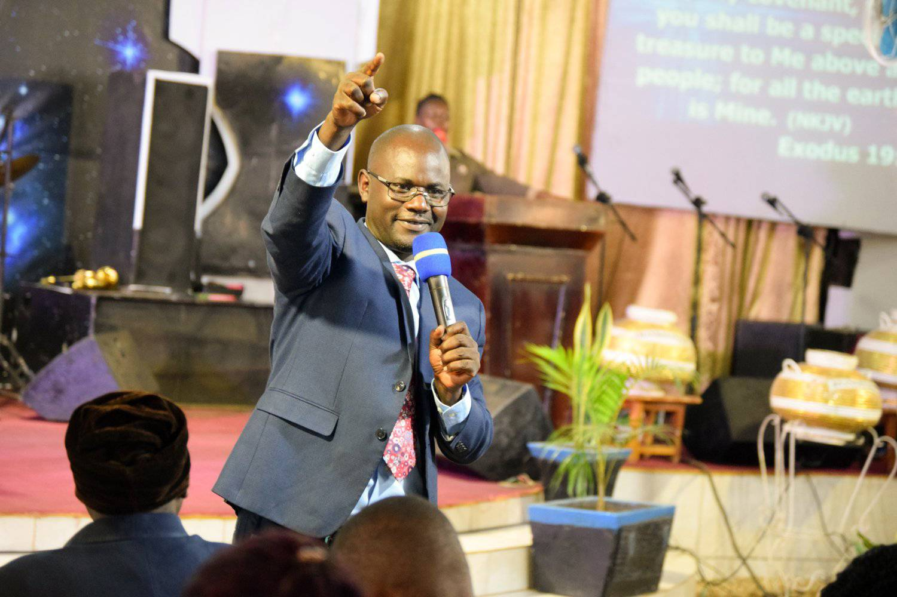

Lunch Hour
come and join us for our weekly lunch hour service every Friday at 12:30pm.
"And I, when I am lifted up from the earth, will draw all people to myself." — John 12:32
"For I know the plans I have for you, declares the Lord, plans to prosper you and not to harm you, plans to give you hope and a future." — Jeremiah 29:11
"The Lord is my shepherd, I lack nothing." — Psalm 23:1
"I can do all this through him who gives me strength." — Philippians 4:13
"Trust in the Lord with all your heart and lean not on your own understanding." — Proverbs 3:5
"Be strong and courageous. Do not be afraid; do not be discouraged, for the Lord your God will be with you wherever you go." — Joshua 1:9
"The steadfast love of the Lord never ceases; his mercies never come to an end; they are new every morning; great is your faithfulness." — Lamentations 3:22-23
"For God so loved the world that he gave his one and only Son, that whoever believes in him shall not perish but have eternal life." — John 3:16
"But those who hope in the Lord will renew their strength. They will soar on wings like eagles; they will run and not grow weary, they will walk and not be faint." — Isaiah 40:31
"The Lord is my light and my salvation—whom shall I fear? The Lord is the stronghold of my life—of whom shall I be afraid?" — Psalm 27:1
.jpg)
.jpg)
.jpg)
.jpg)